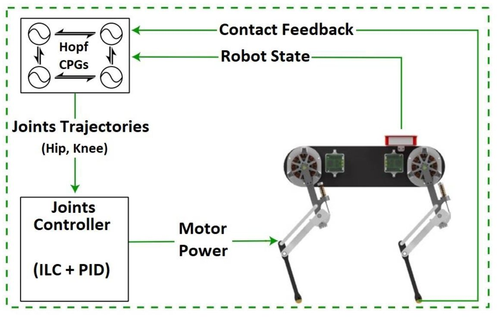

Bio-inspired Controller for Quadruped Robots
Locomotion control architecture inspired by biological central pattern generators.
Technical Highlights
- Designed CPG networks using nonlinear Hopf oscillators.
- Developed independent swing and stance phase control.
- Combined ILC and PD control to improve tracking accuracy.
Enabled flexible multi-gait locomotion with one controller network and reduced trajectory tracking error to below 0.1 rad.